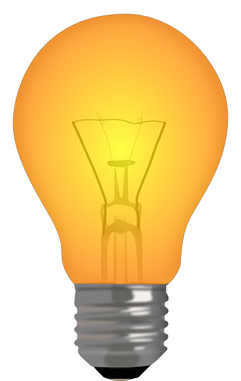

I.1.- Clase Bombilla
Ejercicio Resuelto

Se nos ha planteado implementar una clase que represente un modelo básico de funcionamiento de una bombilla:
- estado lumínico de la bombilla (encendida o apagada),
- número de veces que ha sido encendida desde que se fabricó.
Además de eso se querría mantener un registro de cuántas bombillas han sido creadas hasta el momento y cuántas de ellas se encuentran encendidas.
Teniendo en cuenta los supuestos anteriores, ¿qué atributos te plantearías incluir en una clase Bombilla?
Una vez que tenemos un núcleo básico de atributos para la clase, se nos plantean los siguientes constructores:
- un constructor con un solo parámetro (estado inicial de la bombilla), que hará que la bombilla tenga ese estado inicial al crearse;
- un constructor sin parámetros, que hará que la bombilla al crearse esté apagada.
Implementa esos constructores en Java y añade, si lo consideras necesario, los atributos adicionales que estimes oportuno.
Analiza e implementa los getter (métodos get) que consideres apropiado que esta clase podría tener.
Una vez que ya disponemos de constructores y métodos de consulta de atributos, es el momento de plantearse un posible método toString para esta clase. Nos han propuesto el siguiente formato de salida:
Bombilla xxx. Se ha encendido zzz vecesdonde xxx será el estado de la bombilla (encendida o apagada) y zzz el número de veces que ha sido encendida hasta el momento. También queremos que si la bombilla se ha encendido una sola vez, aparezca la palabra "vez" (singular) y no "veces" (plural). Por ejemplo:
Bombilla apagada. Se ha encendido 0 veces
Bombilla encendida. Se ha encendido 1 vez
Bombilla apagada. Se ha encendido 3 vecesTeniendo en cuenta esas especificaciones, implementa un método toString en Java para la clase Bombilla.
Respecto a los posibles métodos de acción que se pueden aplicar sobre un objeto bombilla se ha pensado en los siguientes:
- método para encender una bombilla;
- método para apagar una bombilla;
- método para conmutar el estado de una bombilla (pasarla de encendida a apagada o viceversa).
Debes tener en cuenta que una bombilla sólo puede ser encendida si aún no lo está. Si se intenta encender una bombilla encendida que ya lo está, debería producirse algún tipo de señal que indicara que se ha intentado llevar a cabo una acción que no se podía o no se debía realizar en ese momento. ¿Qué mecanismo proporciona Java para informar sobre ese tipo de circunstancias? También debería tenerse en cuenta lo mismo para cuando intente apagarse una bombilla que ya se encuentra apagada.
También debes reflexionar acerca de todos los efectos que producen estas acciones sobre todos y cada uno de los atributos de objeto y de clase, no sólo de los más evidentes. Está claro que encender o apagar una bombilla afectará al estado lumínico de la bombilla (apagada o encendida), pero es probable que afecte también a otros atributos (número de veces que se ha encendido la bombilla, cantidad de bombillas encendidas, etc.). Ese análisis habrá que realizarlo siempre que se vaya a implementar un nuevo método.
Teniendo en cuenta todas las consideraciones anteriores, implementa esos tres métodos para la clase Bombilla.
Ejercicio Resuelto

Una vez que disponemos de la clase Bombilla, la idea es poder utilizarla en tus programas, llevando a cabo acciones como:
- declaración de variables referencia a esa clase,
- creación de objetos instancia esa clase mediante la invocación a constructores,
- manipulación de esos objetos a través de sus métodos,
- visualización por la consola de los atributos de los objetos mediante el uso de getters o del método
toString, - etc.
Supongamos que queremos implementar un programa en Java que use objetos de la clase Bombilla para llevar a cabo lo siguiente:
- se muestre la cantidad de bombillas creadas hasta el momento mediante el uso de método
getBombillasCreadas; - se muestre la cantidad de bombillas encendidas en este momento mediante el uso de método
getBombillasEncendidas; - se declaren dos variables
b1,b2yb3de tipo referencia a la claseBombilla; - se instancie una primera bombilla, se asigne su referencia a la variable
b1usando el constructor sin parámetros y se muestre su estado usando el métodogetEstado; - se instancie una segunda bombilla encendida, se asigne su referencia a la variable
b2usando el constructor con párametros y se muestre su estado usando el métodotoString; - para esta segunda bombilla , que se realicen las siguientes acciones (tras cada acción se mostrará su estado mediante el método
toString):- se conmuta su estado tres veces seguidas mediante un bucle
for; - se enciende dos veces seguidas;
- se apaga una vez;
- se vuelve a encender;
- se conmuta su estado tres veces seguidas mediante un bucle
- se instancie una tercera bombilla encendida, se asigne su referencia a la variable
b3usando el constructor con párametros y se muestre su estado usando el métodotoString; - se muestre la cantidad de bombillas creadas hasta este momento mediante el uso de método
getBombillasCreadas; - se muestre la cantidad de bombillas encendidas en este momento mediante el uso de método
getBombillasEncendidas.
¿Qué salida por pantalla deberíamos obtener?
Implementa una clase de pruebas para la clase Bombilla que contenga un método main donde se lleven a cabo las acciones anteriores.
¿Podrías haber implementado esas pruebas dentro de la propia clase Bombilla? ¿Cómo podrías haberlo hecho?
Ejercicio Resuelto

Una vez que ya disponemos de una implementación básica de la clase Bombilla, los analistas de nuestra empresa han venido con unas nuevas especificaciones para el equipo de desarrollo. Nos piden ahora que los objetos de la clase Bombilla también sean capaces de calcular y registrar el consumo de cada bombilla.
Los aparatos eléctricos cuando están funcionando generan un consumo de energía eléctrica en función de la potencia que tengan y del tiempo que estén en funcionamiento. Por tanto, para calcular el consumo producido por un dispositivo eléctrico es necesario conocer la potencia de ese aparato y el tiempo que ha estado funcionando. La potencia en el S.I. se mide en vatios (símbolo W).
El consumo de un dispositivo eléctrico se calcula multiplicando su potencia por la cantidad de tiempo que ha sido usado ese dispositivo. Es decir:
consumo (energía consumida) = potencia × tiempo
donde el consumo se mediría en kilovatios-hora (kWh), la potencia en vatios (W) y el tiempo en horas.
Ante estos nuevos requerimientos, hay una serie de preguntas que puedes plantearte:
- ¿qué nuevos atributos vamos a necesitar para poder tener en cuenta estas nuevas circunstancias? ¿Habrá nuevos atributos de objeto o de clase? ¿De qué tipo serán? ¿Serán constantes o variables?
- ¿cómo va a afectar a los constructores y métodos ya existentes? ¿Habrá que añadirles nuevos parámetros? ¿Será necesario llevar a cabo más comprobaciones? ¿Cómo afectará a la actualización de los atributos ya existentes? ¿Y a la de los nuevos atributos?
- ¿será necesario implementar nuevos métodos? ¿Con qué parámetros? ¿Con qué posibles excepciones?
Teniendo en cuenta todas estas nuevas cuestiones, replantea el nuevo escenario de atributos de la nueva clase Bombilla.
Una vez que ya tenemos los nuevos atributos, habrá que plantearse cómo afecta eso a los constructores que ya teníamos y si podría venir bien disponer de algún otro constructor adicional.
Reestructura los constructores que ya tenías para la claseBombilla y, si lo consideras apropiado, añade alguno nuevo que pienses que podría resultar útil.Analiza e implementa los nuevos getter (métodos get) que podría tener la clase Bombilla.
Respecto a los métodos de acción de los que ya disponíamos:
- método para encender una bombilla;
- método para apagar una bombilla;
- método para conmutar el estado de una bombilla;
analiza qué habría que incluir en sus implementaciones para tener en cuenta las nuevas especificaciones de la clase.